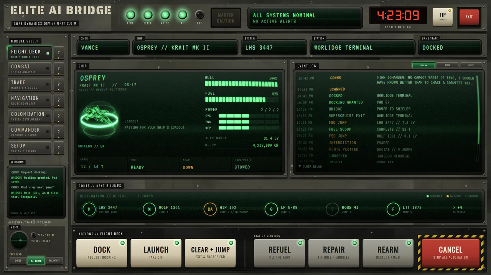
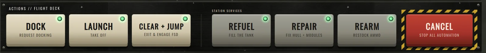
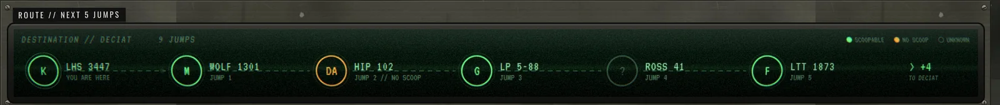
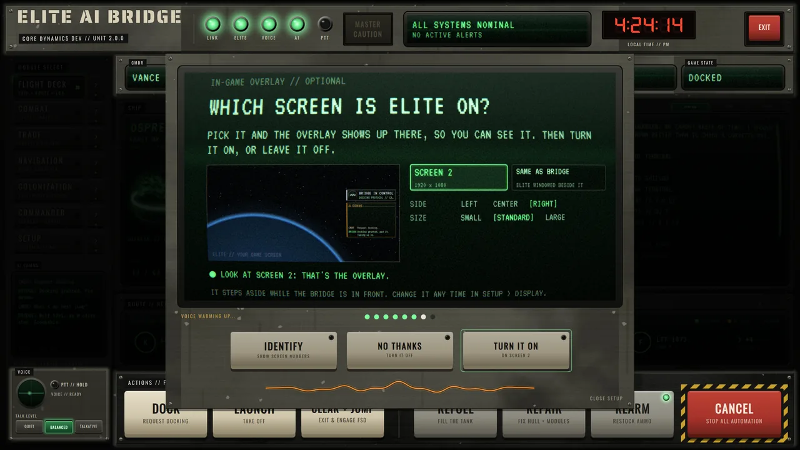

It does things
One key docks you, launches you, or clears the station and jumps. The Bridge presses the keys you already bound in Elite, in order, so you don't have to.
FOR ELITE DANGEROUS // WINDOWS PC
A second screen command deck for Elite Dangerous. Live ship data, one-click flight routines, combat, trade and colony tools, an in-game overlay and a ship that talks back. Built like hardware. Runs on your PC.

MODULE SELECT
Press a key. These are real screens from the Bridge, running on demo data.
FLIGHT DECK
SYSTEMS CHECK
One key docks you, launches you, or clears the station and jumps. The Bridge presses the keys you already bound in Elite, in order, so you don't have to.
Every routine can be stopped with one big red key. You stay in command of your ship. Always.
A ship voice calls out alerts and events, generated locally on your PC. Every page has a short spoken tour on its ? key.
Everything works without AI. Add the co-pilot with your own OpenAI key and talk to your ship with push to talk.
Panels float over Elite when you want them and fade away when you go to the Bridge. Off until you turn it on.
Riveted plates, lit keys, phosphor screens and a master caution light. It looks like it came bolted into your cockpit.
ACTIONS // FLIGHT DECK
Request docking, take off, clear the mail slot and engage the FSD. Refuel, repair and rearm in one pass. Each routine shows what it is doing while it runs.
If Elite doesn't have a key bound for something, the Bridge tells you plainly which one, instead of guessing.


SETUP WIZARD
The first run talks you through your name, where Elite keeps its files, your key bindings, sound and screens. Every step can be skipped and changed later.
The installer sets up its own private runtime, so it doesn't change any Python you already have installed.

AI CO-PILOT // OPTIONAL
CMDRWhere can I sell this gold?
BRIDGERussell Orbital in Wolf 1301, eight light years. Plot it?
CMDRDo it.
BRIDGERoute plotted. Two jumps, both scoopable.
Hold push to talk and ask. The co-pilot knows your ship, your cargo and where you are, and it can run the same routines the keys do.
Uses your own OpenAI API key, billed by OpenAI. The setup wizard explains the cost and helps you set a spending limit. No key? Everything else still works.
IN THE WORKS
2.0 is the foundation. These keys aren't lit yet.
TRANSMISSION
STRAIGHT ANSWERS
Windows 10 or 11 (64-bit), Elite Dangerous on PC, and an internet connection during install. A second screen is the best way to use it, but the overlay covers you on one.
Yes. The installer is new and not code-signed yet, so SmartScreen warns about it. Click More info, then Run anyway. Only download it from the official release page linked here.
About 3 to 10 minutes. It downloads and sets up a private Python runtime and the local voice. A checklist shows each step as it goes.
No. The decks, routines, overlay and ship voice all work without it. The AI co-pilot is an add-on that uses your own OpenAI API key, and OpenAI bills that usage to you.
No. It reads the journal files Elite writes for companion apps, and it presses the keys you bound in Elite's controls. Nothing is injected into the game.
Exclusive fullscreen draws over everything. Set Elite to borderless or windowed and the overlay sits on top.
The full readable source is on GitHub. You can see exactly what it does, and build the installer yourself.
No. Elite AI Bridge is an independent community project. It is not affiliated with or endorsed by Frontier Developments.
READY FOR LAUNCH
Free to use. Windows 10 / 11, 64-bit.
Enjoying it? Leave a tip on Ko-fi. It keeps new decks coming.